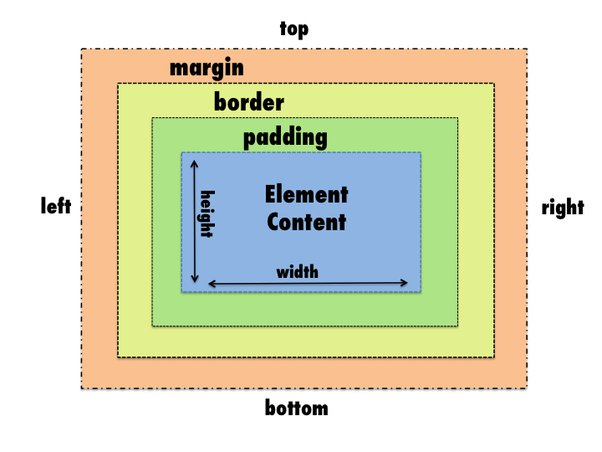

In very simple terms if we try to define these terms then it can be done by this.

Let us imagine an open container with certain lenghth and width and there is an item in the box. This item has some bubble wrap around it. So the item in the box is the content and the bubble wrap around it is the padding and the container edge is the border. Now assume that there is another container placed next to it 6 inches away. So the distance between the two containers is the margin. So in a slightly technical term the explanation would be like:
Padding :
Padding is how much space is within an object sides and it’s contents. It sets spacing between an attributes outer box and its parent or between its neighbor.
Border :
Border is between the margin and padding of an object. By default the border is zero unless actual width is defined. It makes a border spacing fully around inside a parent or child inner attributes.
Margin :
Margin is how much space is around an object. Margin sets spacing inside a parents box for an attribute as a child.
The CSS Box Model for Margins, Borders and Paddings looks something like this:
